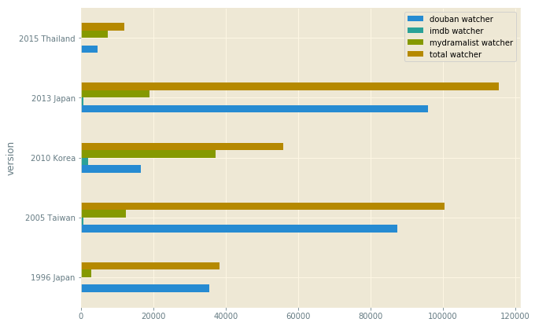
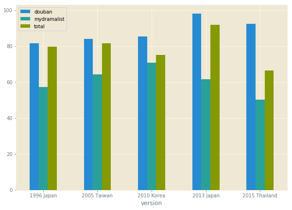
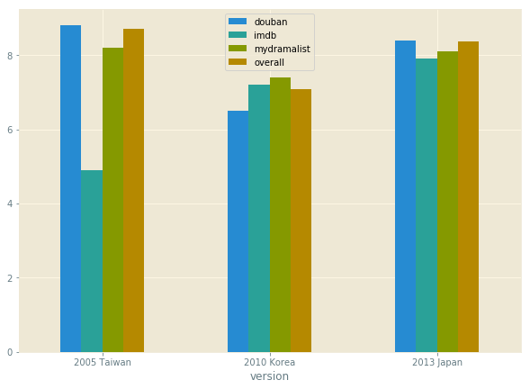

Culture Acceptance & Influence
Wathcer Numbers
'Playful Kiss(2010)' gets more attention from mydramalist and imdb, however, it is the drama shot by Taiwan in 2005 and Japan 2013 are discussed most by watchers from Chinese community based the data from douban.
From this aspect, it reflects that the story adapted from Japanese manga is more accepted by watchers in Asia but not world-wide.
Rating Feedback Rate
Watcher feedback rates are different between sites too. Although Korean 2010 gets highest feedback rate on mydramalist, it is Japan 2013 that gets a nearly 95% feedback rate from the Chinese movie rating site. Due to the large population of China, Japan 2013 also gets the highest overall feedback rate in these 5 TV shows.
Average Rating
Lacking essential data, I compared Korea 2010 with Taiwan 2015 and Japan 2013 only, as these 3 versions are more widely watched.
It is clear that the average rating of Korea 2010 is behinde the other 2 in general, which proves again that this Korean drama is not a successful adaptation.
In Summary
Even though Japan 2013 does not get the highest overall rating mark, I would recommend this version to friends if they want to watch the story, because Japan 2013 gets a more reliable rating from all 3 sites.
It is clear that Taiwan 2015 gets the highest overall mark, however, this is probably a reason of culture acceptance, as the Chinese watchers from douban prefer this version due to the background similarity. In imdb, it is rated only 4.9 by watchers from global.